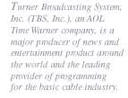

| services |
| home page |
|
|  |
 |
| . For more information, contact Brian Keller at keller. Return to top NETWOG (Network Security) Users Group Meets the fourth Wednesday of every month from 3-5 pm in 120 Baker Systems; dates are announced on the osu. network newsgroup and through the security-public mailing list. NETWOG (Network Technical Working Group) Meets the second Thursday of odd-numbered months from 2-3 pm in 120 Baker Systems; dates and other details are announced on the osu. |